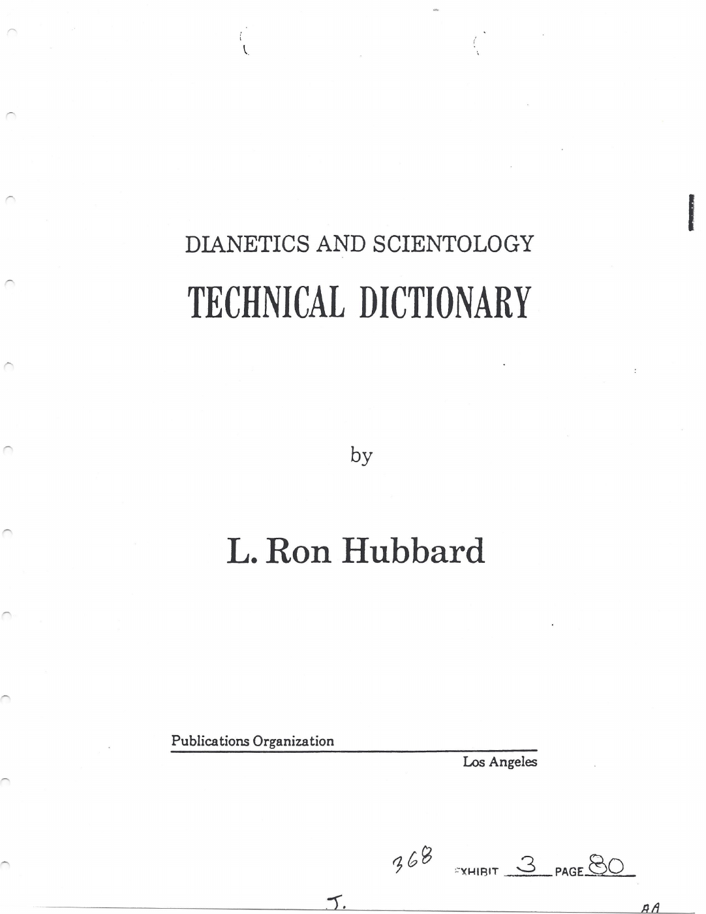
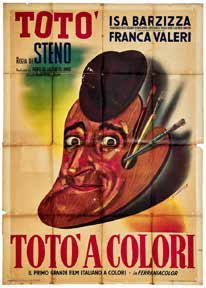
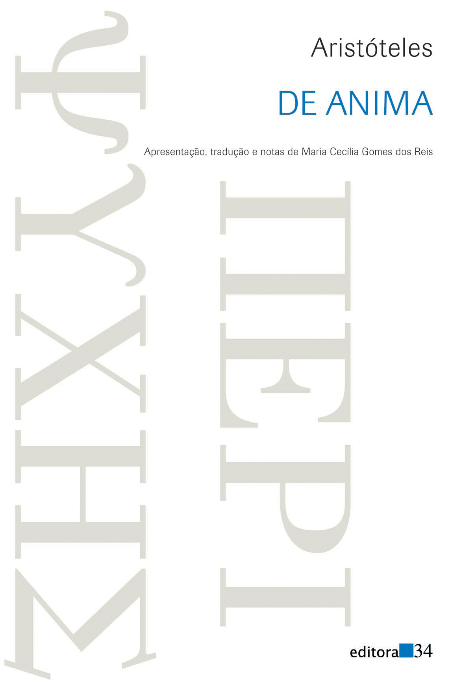
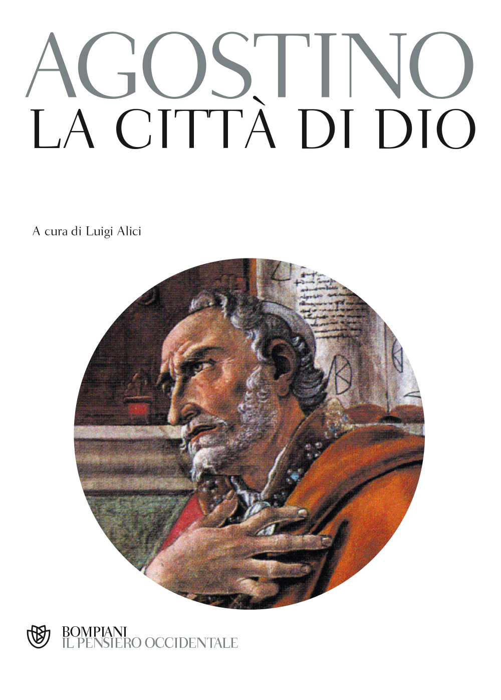

1:03:58 · 17 OPERE
Trovare rifugio nella volontà.
Il filo del discorso
Dr Divago interroga il rapporto fra volontà, ragione e resistenza ai fatti. Il dizionario tecnico di Hubbard costituisce il primo caso: la lettura polemica di introduzione e voci serve a discutere come un linguaggio possa diventare un sistema chiuso. Il discorso si sposta poi sull’antisemitismo, sulla critica a Israele e sull’audizione delle presidenti universitarie al Congresso. La scheda mantiene riconoscibile la posizione del relatore, distinguendola da diagnosi dei gruppi, accuse non accertate e generalizzazioni sulle proteste. Le fonti chiariscono contesto delle risposte e tutela dei civili, oltre all’uso giuridico del termine genocidio. Una genealogia filosofica attraversa quindi Gorgia, De anima, La città di Dio ed Etica di Spinoza, fino alla volontà di vivere di Schopenhauer e alla volontà di potenza di Nietzsche. Il relatore legge questo percorso come passaggio dalla ragione orientata al bene a una pretesa di potenza che sostituisce il reale; i testi, tuttavia, richiedono distinzioni fra desiderio, deliberazione, affetti e giudizio. Pirandello, Totò e Amleto offrono pause e immagini del rapporto fra apparenza e realtà. La conclusione contrappone la libertà della finzione all’obbligo documentale del saggio, riprendendo il problema di una volontà che cerca rifugio nelle proprie rappresentazioni.
I libri nel discorso

Così è (se vi pare)
Copertina: Edizione digitale UTET, con note critiche di Guido Nicastro, ISBN ebook 9788851142810. Dramma rappresentato per la prima volta nel 1917.
Copertina digitale autentica UTET gialla con autore e titolo bianchi. L’immagine si riferisce all’ebook; formato cartaceo, paginazione e anno di una ristampa non sono identificati.
Pirandello e Così è, se vi pare espliciti.
Passaggio 7:36 ↗ · Fonti e libro ↗
Dianetics and Scientology: Technical Dictionary (Dizionario tecnico di Dianetics e Scientology)
Frontespizio del dizionario, riproduzione archivistica: Frontespizio inglese: Publications Organization, Los Angeles; riproduzione da estratto archivistico pubblicato su Internet Archive.
Frontespizio dalla prima pagina dell’estratto 1979 Technical Dictionary (Excerpt). Titolo, autore e editore leggibili; i segni documentali restano visibili. La data nel nome del file non certifica l’edizione della pagina, né questa immagine identifica la versione italiana del video. Respinta la sola legatura rossa anonima proposta per ISBN dal servizio bibliotecario.
Titolo italiano esplicito e letture dall’introduzione e dalle voci; opera diversa dai Technical Bulletins.
Passaggio 8:22 ↗ · Fonti e libro ↗
Costituzione degli Stati Uniti d’America
Copertina della raccolta: Testo firmato il17settembre1787. Per l’immagine si usa la raccolta Penguin Classics The Federalist Papers, ISBN 9780140444957, che dichiara di includere il testo della Costituzione; non è una fotografia della pergamena originaria.
Copertina autentica di The Federalist Papers: la descrizione editoriale attesta che la raccolta comprende il testo completo della Costituzione. Non è il frontespizio costituzionale del 1787 e Hamilton, Madison e Jay non sono presentati come unici autori del documento.
Riferimento alla tutela religiosa del Primo emendamento, con iniziale imprecisione articolo/primo emendamento.
Passaggio 16:53 ↗ · Fonti e libro ↗
Israelophobia: The Newest Version of the Oldest Hatred & What To Do About It
Identificazione probabile
Copertina ufficiale · tascabile 2024, successivo al video: Prima edizione rilegata: 7 settembre 2023, ISBN 9781408719275. Copertina mostrata: tascabile del 5 settembre 2024, 240 pagine, con nuova prefazione sul 7 ottobre; ISBN 9781408719282. Edizione successiva alla conversazione, non attribuita al video.
Edizione di riferimento successiva alla fonte dell’ottobre 2023. La nuova prefazione sul 7 ottobre è dichiarata sulla copertina; non viene retrodatata né considerata parte della edizione discussa nel colloquio. Consultati i dati editoriali, non il testo integrale del libro.
Titolo tradotto e tema della domanda; autore non pronunciato, identificazione probabile.
Passaggio 19:48 ↗ · Fonti e libro ↗
La società del contrario
Copertina: Zambon · 2005
Copertina autentica dell’edizione di riferimento, controllata visivamente. Non identifica l’esemplare letto o citato nel video.
Titolo del proprio libro e anno dichiarato 2005 espliciti.
Passaggio 26:52 ↗ · Fonti e libro ↗
Totò a colori
Identificazione probabile
Manifesto del film: esemplare Bolaffi, lotto 86: Film del 1952; riproduzione di manifesto Hugo Giammusso, Roggero & Tortia, Torino, documentato nel catalogo Bolaffi 557, lotto 86.
Immagine intera del manifesto estratta senza ricostruzione dall’oggetto incorporato nella pagina PDF 34, pagina stampata 32, del catalogo d’asta. Conserva pieghe e margini dell’esemplare. È un manifesto cinematografico, non una copertina libraria; non si attribuisce al video. La scheda della Cineteca riguarda un estratto e riporta 1953: per il lungometraggio si usa il 1952 del catalogo del cinema italiano e del fascicolo di censura.
Totò, onorevole Trombetta e battuta: corrispondenza con il vagone letto, titolo non pronunciato.
Passaggio 27:48 ↗ · Fonti e libro ↗
Gorgia
Copertina: Gorgia, Bompiani, giugno 2001, a cura di Giovanni Reale, testo greco a fronte, 384 pagine, ISBN 9788845291111. Copertina ufficiale blu, bianca e verde acqua con titolo e autore; edizione di riferimento non identificata nel video.
Immagine autentica dell’opera, controllata visivamente; l’edizione di riferimento non è attribuita al filmato.
Gorgia e Platone espliciti nel tema della volontà e del tiranno.
Passaggio 31:06 ↗ · Fonti e libro ↗
L’anima (De anima)
Copertina: Editora 34, traduzione dal greco di Maria Cecília Gomes dos Reis, 2006; seconda edizione 2012; ISBN 9788573263510.
Copertina autentica della traduzione portoghese, scaricata dal catalogo Editora 34; non è l’edizione del video. Rimmer. Nessuna di queste immagini respinte viene esportata.
Aristotele e De anima espliciti; desiderio e ragione nel libro III.
Passaggio 32:09 ↗ · Fonti e libro ↗
Réflexions sur la question juive
Identificazione probabile
Copertina: Gallimard · Folio essais 10 · 1985 · francese
Immagine autentica dell’opera, controllata visivamente; non identifica l’edizione usata nel video.
Sartre, saggio sull’antisemitismo e anno erroneo 1948; titolo non pronunciato, riscontro probabile alle Réflexions 1946.
Passaggio 36:27 ↗ · Fonti e libro ↗
La città di Dio (De civitate Dei)
Copertina: Bompiani, a cura di Luigi Alici, 2001, ISBN 9788845290985.
Copertina autentica dell’edizione Bompiani curata da Luigi Alici, dal servizio immagini dell’editore. Non identifica una precisa edizione letta dal relatore.
Agostino e Città di Dio espliciti; passo sulle volontà localizzabile in XIV,6.
Passaggio 42:27 ↗ · Fonti e libro ↗
Genesi
Copertina: Einaudi, I libri della Bibbia / Einaudi Tascabili, 2000; introduzione di Steven Rose
Copertina dell’edizione autonoma Genesi, nella serie I libri della Bibbia, con introduzione di Steven Rose. Edizione scelta come riferimento iconografico; nessuna edizione è confermata nel video.
Genesi nominata per il motivo teologico della scelta di bene e male.
Passaggio 44:05 ↗ · Fonti e libro ↗
Etica
Copertina: Laterza · Biblioteca Filosofica · 2009 · traduzione di Sergio Landucci
Immagine autentica dell’opera, controllata visivamente; l’edizione di riferimento non è attribuita al filmato.
Titolo e autore espliciti; lettura del latino dallo scolio II,48.
Passaggio 44:43 ↗ · Fonti e libro ↗
Il mondo come volontà e rappresentazione
Copertina: Newton Compton · edizione di riferimento
Titolo e autore espliciti.
Passaggio 51:15 ↗ · Fonti e libro ↗
La volontà di potenza
Identificazione probabile
Copertina: Bompiani · 2001 · a cura di Maurizio Ferraris e Pietro Kobau
Copertina autentica della raccolta di frammenti postumi ordinati da Gast e Förster-Nietzsche, come dichiarato anche nell’immagine. Non indica un’opera conclusa da Nietzsche né l’edizione posseduta dal narratore.
Volontà di potenza nominata fra frammenti tardi e mediazione postuma; collegamento alla raccolta probabile, edizione non precisata.
Passaggio 53:31 ↗ · Fonti e libro ↗
Vangelo secondo Giovanni
Identificazione probabile
Copertina del volume completo: San Paolo, 2014 · Nuova Versione dai Testi Antichi · edizione di riferimento
Vangelo secondo Giovanni è un libro della Bibbia. L’immagine mostra il volume completo San Paolo di riferimento, non un’edizione autonoma del singolo libro e non una versione identificata nella citazione.
Formula latina Verbum caro factum est, corrispondente a Giovanni1,14; evangelista non nominato.
Passaggio 56:07 ↗ · Fonti e libro ↗
La Repubblica
Copertina: Laterza · La Repubblica · edizione con testo a fronte di riferimento
Immagine associata all’ISBN di riferimento e controllata visivamente; edizione e traduzione non identificate come quelle citate o lette nel video.
Trasimaco, Repubblica e Platone espliciti.
Passaggio 58:38 ↗ · Fonti e libro ↗
Amleto
Copertina: BUR · 2022 · traduzione di Rocco Coronato · illustrazioni di John Austen
Immagine autentica dell’opera, controllata visivamente; non identifica l’edizione usata nel video.
Titolo e battuta del re di uno spazio illimitato e dei brutti sogni; richiamo ripetuto alla conclusione.
Passaggio 59:20 ↗ · Fonti e libro ↗